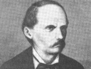

MAPA DE LA UNIÓN

Información
La Unión es un departamento ubicado en la zona oriental de El Salvador. Su cabecera departamental es la ciudad de La Unión, que se encuentra en la costa del Golfo de Fonseca. Es una región de gran importancia económica debido a su puerto marítimo y su actividad pesquera. Además, posee una gran riqueza natural con playas, islas y montañas.

Datos Históricos
El departamento de La Unión fue fundado el 22 de junio de 1865. Su desarrollo ha estado vinculado históricamente al comercio marítimo en el Golfo de Fonseca, que conecta a El Salvador con Honduras y Nicaragua. Durante el siglo XIX y XX, el puerto de La Unión fue uno de los más importantes del país. Actualmente, el Puerto de La Unión es un punto estratégico para el comercio internacional.

Lista de Municipios
- Anamorós
- Bolívar
- Concepción de Oriente
- Conchagua
- El Carmen
- El Sauce
- Intipucá
- La Unión
- Lilisque
- Meanguera del Golfo
- Nueva Esparta
- Pasaquina
- Polorós
- San Alejo
- San José
- Santa Rosa de Lima
- Yayantique
- Yucuaiquín
Centros Turísticos
Entre los principales destinos turísticos de La Unión se encuentran el Golfo de Fonseca, un atractivo natural compartido con Nicaragua y Honduras, ideal para recorridos en lancha y avistamiento de aves. También destacan la playa Las Tunas, la playa El Tamarindo y la isla Meanguera, perfecta para disfrutar del mar y la tranquilidad.

Lagos
El departamento de La Unión no posee lagos de gran extensión, pero sí cuenta con cuerpos de agua importantes como lagunas costeras y esteros, como el Estero de Jiquilisco, que es un hábitat crucial para la biodiversidad de la región.

Ríos
Varios ríos atraviesan La Unión, como el río Goascorán, que sirve de frontera natural entre El Salvador y Honduras. También destacan el río Sirama.

Volcanes
El volcán de Conchagua es el más representativo del departamento. Con una altura de 1,225 metros sobre el nivel del mar, ofrece impresionantes vistas del Golfo de Fonseca y las islas cercanas. Es un destino ideal para el senderismo y la observación de la naturaleza.

Personajes Célebres
fue un político salvadoreño nacido en San Salvador el 3 de diciembre de 1810. Fue presidente de El Salvador en varios períodos, entre 1851 y 1871, y es conocido por su liderazgo en el partido conservador. Durante su mandato, se destacaron avances significativos en el país, incluyendo la creación del departamento de Usulután en 1865 y la construcción de diversas obras públicas, como muelles y carreteras.
